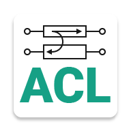

Мои проекты
ACL (Asymmetrical Coupled Lines)
ACL (Asymmetrical Coupled Lines) – мобильное приложение, которое предназначено для анализа и синтеза связанных линий СВЧ и моделирования их физической реализуемости посредством просчёта множества параметров.
Системные требования:
- Android 4.4 и выше;
- 6 Мб свободного пространства.
Скачать финальную версию приложения ACL: ACL v.1.2
Для начала, в мобильном приложении необходимо выбрать один из шести наборов входных параметров, среди которых первые 4 набора производят анализ, а остальные 2 производят синтез.
Далее нужно ввести все значения параметров, посредством заполнения форм ввода и нажать кнопку «Расcчитать».
После этого откроется окно с результатами вычислений по нужным параметрам и будут отображаться 30 расcчитанных параметров. Для удобства навигации присутствует кнопка возврата к началу списка результатов расчёта и кнопка возврата к главному окну.
Репозиторий на GitHub: закрытый исходный код